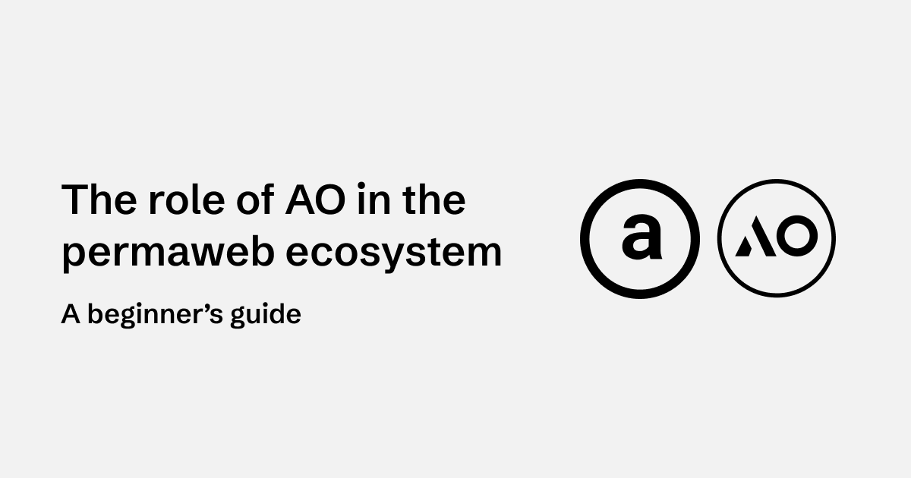
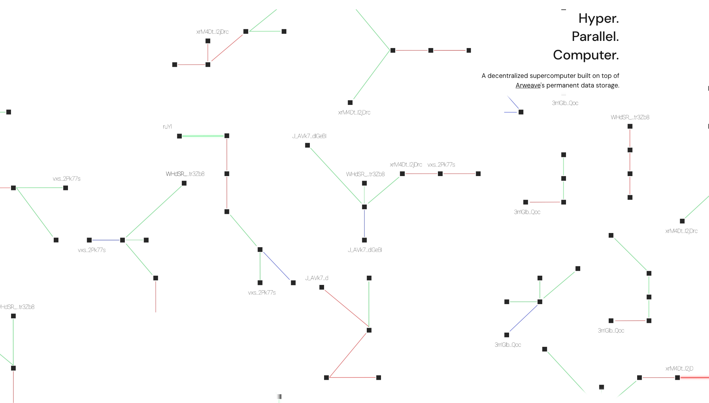
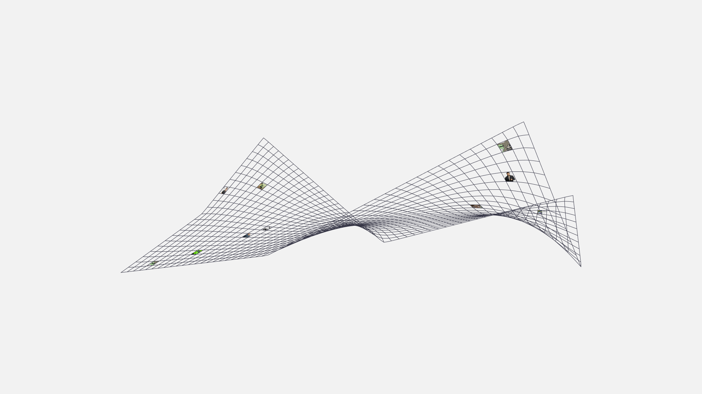
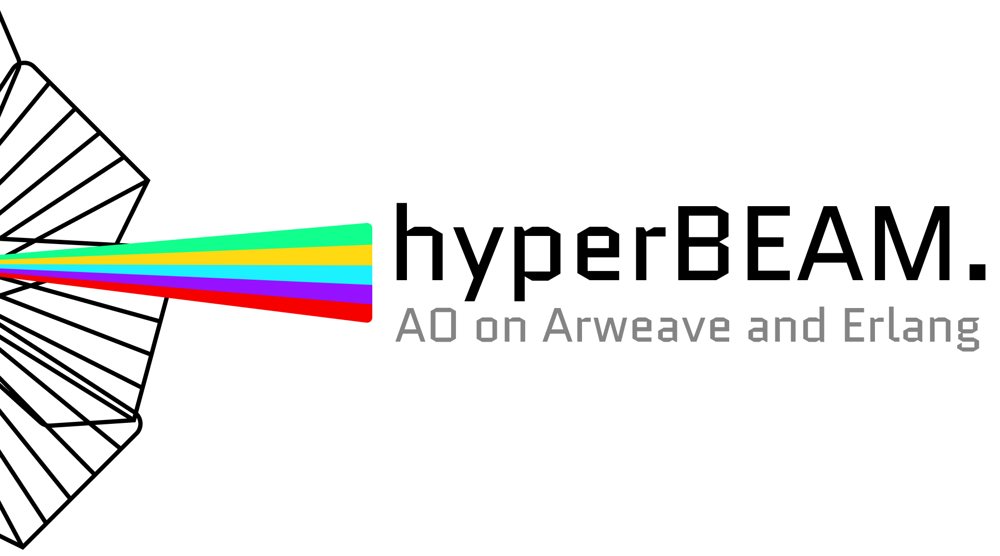

I. Introduction
The permaweb is a permanent and decentralized web built on top of Arweave. The original vision of the traditional web was to create an accessible repository of human knowledge. While it has been largely successful, a critical flaw remains: the web lacks permanence. When documents are removed from a server, they are lost to the collective knowledge base. Similarly, applications that once operated on the web become inaccessible when their developers or maintainers alter or remove them.
The permaweb solves this by ensuring that all data, applications, and interactions remain available forever. However, to create a fully decentralized alternative to the web, permanent storage alone is not enough. We need a scalable, trustless computational layer that enables applications to run without reliance on centralized servers. This is where AO comes in.
II. What is AO?

AO is a “hyper-parallel computer” designed to provide secure and scalable computing power. It combines the reliability of blockchain technology with the efficiency and speed of traditional cloud services. Think of it as a decentralized cloud computing platform that allows developers to deploy applications and execute computations without trusting centralized infrastructure. AO enables permissionless, onchain execution at any scale, supporting everything from simple scripts to complex, high-performance applications.
Unlike traditional blockchain-based smart contract platforms, which often suffer from scalability limitations and high costs, AO is designed to handle vast amounts of parallel processing. This makes it an essential building block for the next generation of decentralized applications (dApps).
III. What is the permaweb?

The permaweb is a decentralized, permanent web built on Arweave. It offers a complete stack for building and running applications that do not rely on centralized servers. The key components of the permaweb include:
- Arweave: The storage layer that ensures data replication and availability through a decentralized, sustainable endowment model.
- Gateways: Content delivery servers with diverse business models and incentives (e.g., arweave.net, ar.io, g8way.io, and aoweave.tech).
- GraphQL: A querying system offered by gateways, enabling seamless interaction with the network’s data. Developers can use GraphQL to search posts by users, filter data by tags or timestamps, and more, much like traditional web applications.
- AO: A hyper-parallel computational layer that provides a unified environment for decentralized applications and processes.
Beyond the core components, there are open protocols built on Arweave’s robust data lake, enabling composable applications that can seamlessly leverage and build on each other’s data.
Open protocols and frameworks include:
- Stamps: A universal “like” button for content on the permaweb.
- Vouch: A decentralized proof-of-humanity system.
- Zones: A composable user profiles and digital entity framework.
- Universal Content Marketplace (UCM): A decentralized order book for transacting digital assets on the permaweb.
- Universal Data License (UDL): A programmable content licensing framework that can be attached to any piece of permaweb data.
Learn more about the permaweb here.
IV. How does AO fit in the permaweb?
AO brings decentralized, onchain computation at scale to the permaweb. While Arweave ensures data permanence, AO enables applications to process and compute data without relying on centralized services. Think of AO as the CPU and Arweave as the hard drive that makes up the permaweb computer. AO unlocks a wide range of new possibilities for permaweb applications, including:
- Dynamic dApps: Applications that require real-time or interactive elements, such as deFi, gaming, social media and more.
- Decentralized AI: Training and running AI models in single smart contracts without centralized control.
- Automated Processes: Trustless execution of smart contracts and workflows that can interact with permaweb data in parallel.
By leveraging AO, developers can build applications that are not only permanent but also highly scalable and autonomous.
V. Looking ahead, what’s next for the permaweb?

AO-Core & HyperBeam
Permaweb applications have been running on AO legacynet since February 2024, giving developers a chance to experiment with this new programming environment. However, as expected on any testnet challenges emerged, most notably, congestion on compute units (CUs) caused by excessive message traffic from users and applications. When sending messages is free, it can be abused, leading to inefficiencies.
Now that AO is on mainnet, AO-Core offers a flexible framework for running various computational models without enforcing a single architecture. Furthermore, HyperBeam, an Erlang-based node implementation of the AO-Core protocol, is now live. Node operators are providing computation services to the network using HyperBeam, and applications on AO mainnet will now require gas fees to send messages. This change enhances network reliability and further decentralizes the system as more node operators come online.
Permaweb Index
On the application layer, the Permaweb Index is live and the fair launch UI is launching soon. The Permaweb Index is a decentralized funding mechanism that enables users to allocate AO yield to Permaweb projects in exchange for PI tokens. Unlike traditional VC funding or token presales, this model ensures ongoing community support rather than one-time investments.
VI. Conclusion
Arweave offers an entirely new understanding of how we store and access data, ensuring that digital knowledge is never lost. However, to fully realize the vision of a decentralized web, we need computation that is just as permanent and trustless as the storage layer. AO fulfills this role by providing scalable, onchain execution, enabling a new generation of decentralized applications.
As the permaweb ecosystem grows, AO will continue to play a critical role in ensuring that applications can run efficiently and securely, without reliance on centralized infrastructure. Together, AO and Arweave are laying the foundation for a more open, transparent, and resilient internet.
Follow AO on X to stay up to date on the hyper parallel computer.